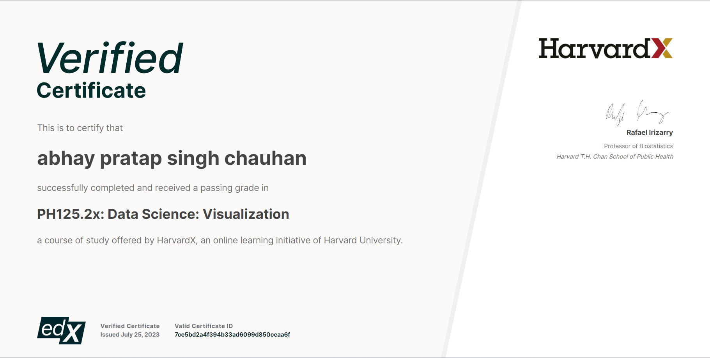

More About Abhay..
My Journey in field of Computer Science starts in my Grade 6 where I first learned about Html with a strong foundation in C++ during my Class 11th &12th, I further joined BBDNIIT, Lucknow to pursue my B.Tech in Information technology. With my interest in data science, I started studying languages like R and python with help of courses offered by edx from Harvard university.
I Invested my time in building my skillset as fast as possible but affeciently as necessary and recieved certification In datascience Visualization a Course of study offered by HarvardX,an online learning initiative of Harvard University
Work Experience
Tata-Forage (Data Visualisation: Empowering Business with Effective Insights)
- Framing the Business Scenario: Drafted questions with provided Dataset which will be important and relevant to the CEO and CMO.
- Choosing the Right Visuals with the help of provided resources
- Created Effective visuals using Tableau
- Communicating Insights and Analysis: developed a script and video presenting based on visual Created
Cognizant-Forage (Agile Methodology Virtual Experience Program)
- Practical Tasks in Waterfall vs Agile.
- Some examples of User Stories using Agile Methodology.
- Prepared a Presentation on Role Assignment and ceremonies of agile methodology & Agile Tools, further detailed coaching on tools like Curve Balls. Elaborative study material on Methodology Review &additional resources where provided
PWC-Forage (Cyber Security Consulting Virtual Experience)
- Performed a risk assessment of the client’s procure-to-pay process and identify business process and system controls
- Selected the correct questions to ask during an SDLC walkthrough meeting with the client.
- Inspected evidence to determine if MedTech’s change management controls are designed and operating effectively using IT General Controls Test of design and Operating Effectiveness
- Prepared Controlled Testing Summary presentation in one slide.
Projects
Covid 19 Data Exploration
- In this project, I undertook data exploration on a comprehensive COVID-19 dataset using MS SQL. Through meticulous querying and data wrangling techniques, I transformed and structured the data to enhance its compatibility and usability in Tableau.
Covid 19 Data Visualization using Tableau
- In my project, I seamlessly merged my SQL expertise from previous work with the dynamic capabilities of Tableau. I strategically utilized the SQL queries developed earlier to extract and refine the dataset. With a judicious eye for detail, I transformed raw data into meaningful insights, utilizing Tableau's visualization tools.
Data Cleaning of housing Data
- In my recent project, I undertook the task of data cleaning using MS SQL on a housing dataset. Employing advanced SQL techniques, I meticulously addressed inconsistencies, missing values, and inaccuracies within the data.